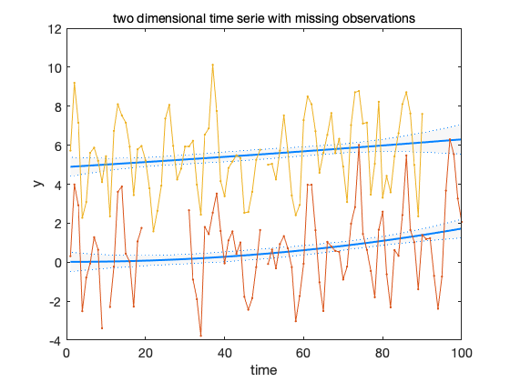

DLM demo no 3, synthetic multivariate time series
Test the dlmsmo code with multivariate series with missing observations.
generate system matrices
[G,F] = dlmgensys(struct('order',2,'trig',2));
generate observations for the first series
m = size(G,2); p = size(F,1); nobs = 100; t = (1:nobs)'; W = zeros(m,m); W(2,2) = 0.0004^2; for i=4:7 ; W(i,i)=0.0005^2; end V = 0.8; % obs error std x = zeros(nobs,m); y = zeros(nobs,p); x(1,:) = [0 0.0001 0.0003 1 1 2 1]; % initial values for i=2:nobs x(i,:) = x(i-1,:)*G' + randn(1,m).*sqrt(diag(W))'; y(i,:) = x(i,:)*F' + randn(1,p)*V; end
generate second series
GG = kron(eye(2),G); FF = kron(eye(2),F); WW = diag([diag(W);diag(W)]); VV = ones(nobs,2)*V; yy = [y,y+5] + randn(nobs,2)*V; x0 = zeros(m+m,1); C0 = eye(m+m);
add some missing observations
yy(10,1) = NaN; yy(50,:) = NaN; yy(20:30,1) = NaN; yy(end-9:end,2) = NaN;
dlm = dlmsmo(yy,FF,VV,x0,GG,WW,C0);
figure(1); clf confband(t,dlm.x(1,:)',dlm.xstd(:,1)); hold on confband(t,dlm.x(8,:)',dlm.xstd(:,8)); plot(t,yy,'.-') hold off title('two dimensional time serie with missing observations') xlabel('time'); ylabel('y');